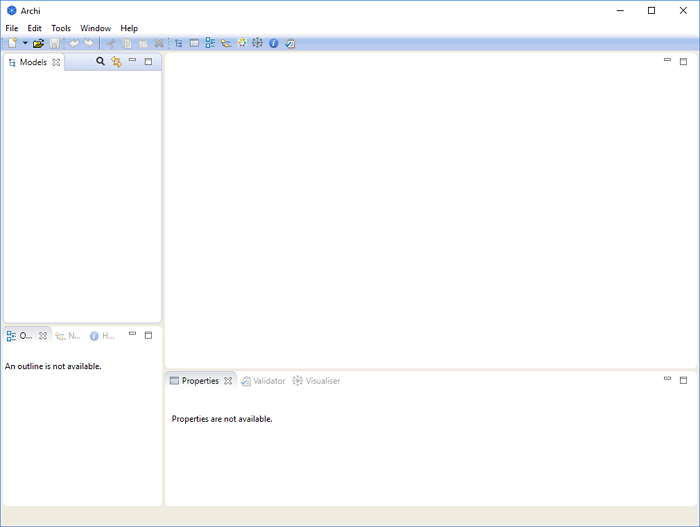
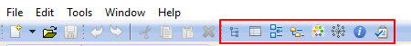

Téléchargez la version souhaitée sur http://www.archimatetool.com
La version Windows possède un installateur automatique. Exécutez cet installateur sur votre système. Les versions Windows 7, 8 et 10 32 et 64 bits de Windows sont prises en charge. L'installateur se contente de copier les fichiers du programme dans le dossier cible et associe les fichiers *.archimate avec Archi. Un désinstallateur est également inclus.
Vous pouvez également installer Archi manuellement via une installation de l'archive zip. Décompressez ce fichier et exécutez soit "Archi" soit le fichier programme. Sont également inclus des fichiers scripts Windows - "RegisterFileAssociation.bat" et "UnregisterFileAssociation.bat". Le premier de ces fichiers va associer l'extension de fichier *.archimate avec Archi dans la base de registre de Windows. Le second fichier script supprimera cette association.
Les versions Mac et Linux sont respectivement fournies dans une archive zip et tar.gz. Décompressez simplement l'archive téléchargée et double-cliquez sur le fichier application "Archi" pour exécuter le programme.
Le nouvel espace de travail vierge d'Archi ressemble à ce qui suit:
L'espace de travail par défaut d'Archi
L'espace de travail est divisé en plusieurs sous-fenêtres présentées ci-après:
Ces sous-fenêtres peuvent être réarrangées en les tirant vers leur nouvelle position ou en dehors de la fenêtre principale de l'application, ce qui les détache d'elle.
Les différentes fenêtres peuvent être affichées ou masquées en choisissant les entrées de menu appropriées du menu "Fenêtre" de la barre de menu principale ou grâce aux boutons de la barre d'outils:
La barre d'outils des fenêtres
Pour réinitialiser l'espace de travail des fenêtres d'Archi dans son état initial, choisissez "Réinitialiser l'agencement des fenêtre" du menu "Fenêtre" du menu principal.
Vous pouvez masquer ou afficher la barre d'outils principale en choisissant "Masquer/Afficher la barre d'outils" dans le menu "Fenêtre" du menu principal.